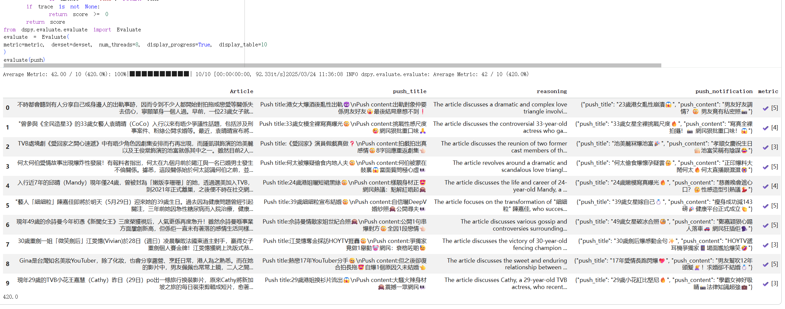
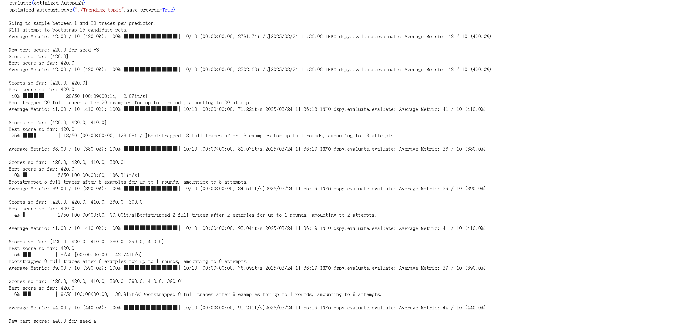

编辑投入太重
从收集资料、写作、校对到发出，重复性步骤多，难以覆盖全部运营场景。
IT 英皇 · 内部提效项目
用 DSPy 与 n8n 串起“数据收集 → AI 生成 → 人工审核 → 推送用户”的工作流，把编辑团队从重复生产中释放出来。

01 / THE PROBLEM
人工编辑投入高、内容同质化明显，而每一次推送的转化又缺少可持续复用的经验。目标不是单次生成文案，而是建立一条可优化、可审核、可回收数据的生产线。
从收集资料、写作、校对到发出，重复性步骤多，难以覆盖全部运营场景。
高转化样本没有被结构化地转成生成策略，导致文案质量依赖个人经验。
02 / THE APPROACH
项目从样本分析开始，再把内容生成、人工把关与效果回收连接在同一条工作流里。
筛选 150 条 Open Rate 超过 50% 的推送作为高转化样本，并另设 50 条训练与测试数据，明确“符合编辑标准”的评估目标。
独立设计基于 DSPy 的提示词优化方案，利用 BootstrapFewShot 迭代生成逻辑，让内容准确率从 60% 提升至 90%。
将数据收集、AI 生成、人工审核、推送用户串成端到端流程；人工仍保留在发布前的关键判断位置。
每轮推送把结果回流到内容策略。上线后进行了超过 4 轮、每轮超过 14 天的 A/B 测试，用真实打开率持续检验自动化是否真的创造价值。

03 / OUTCOME
让团队更少重复，
让内容更有机会被打开。
MY RESPONSIBILITY